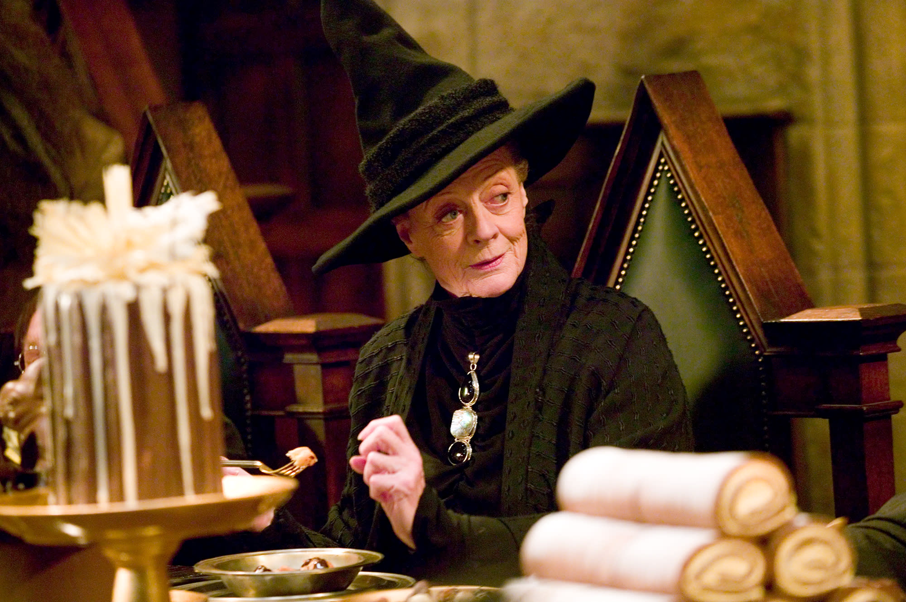

House Gryffindor
House Gryffindor, represented by the colors green and silver, with a Lion mascot. This is the house of bravery and boldness. Founded by Godric Gryffindor, considered the bravest of the founders, and known for his use of a sword. Gryffindor is the house for those with courage and bravery, and the Sorting Hat sends those who would charge headfirst into the unknown here. Like House Slytherin, Gryffindor is known for its Quidditch team. The dorms are located in Gryffindor Tower on the seventh floor.
People of House Gryffindor
House Gryffindor has had many people of note through the years. Such as Gryffindor's very own ghost, Nearly Headless Nick. Gryffindor is currently being headed by Professor McGonagall, who is known for her transfiguration magic. In the past, our numbers have included Albus Dumbledore himself, and now we have the Boy Who Lived, Harry Potter. This is the house for those of brave hearts and courageous spirit. If you believe in never giving up and never surrendering, Gryffindor is the house for you.
